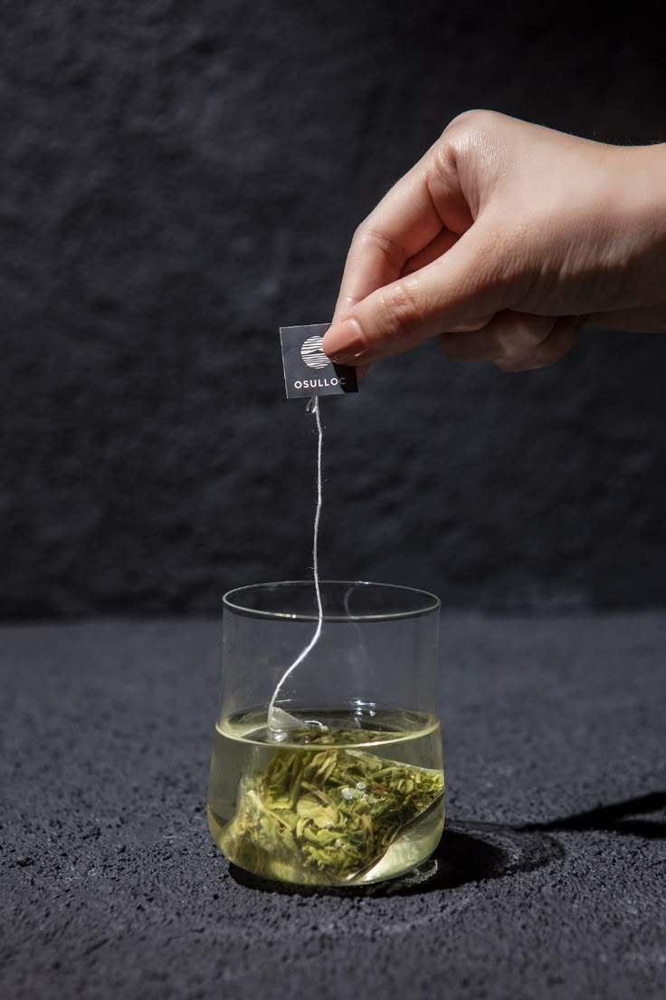
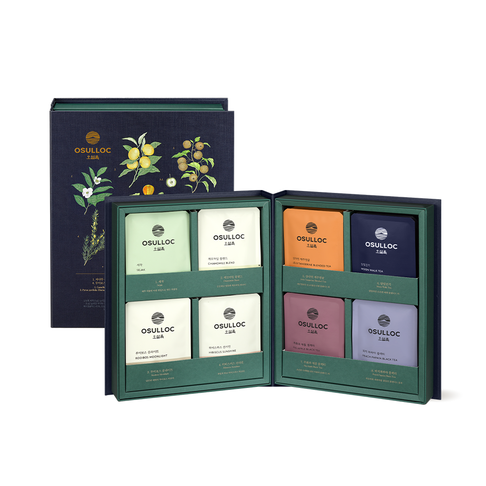
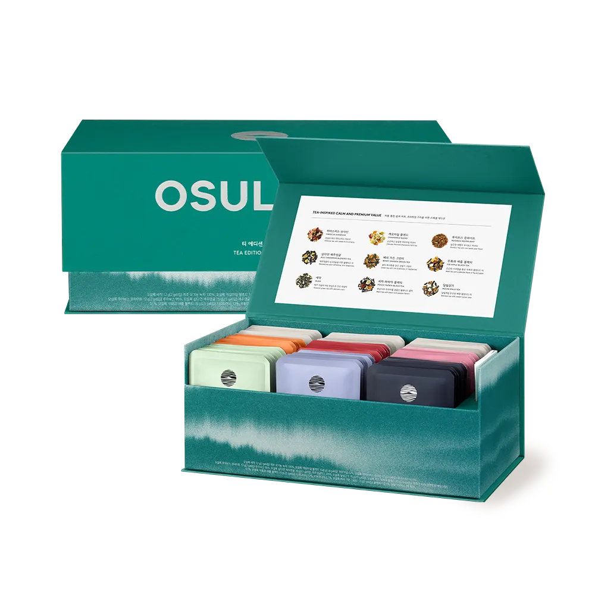
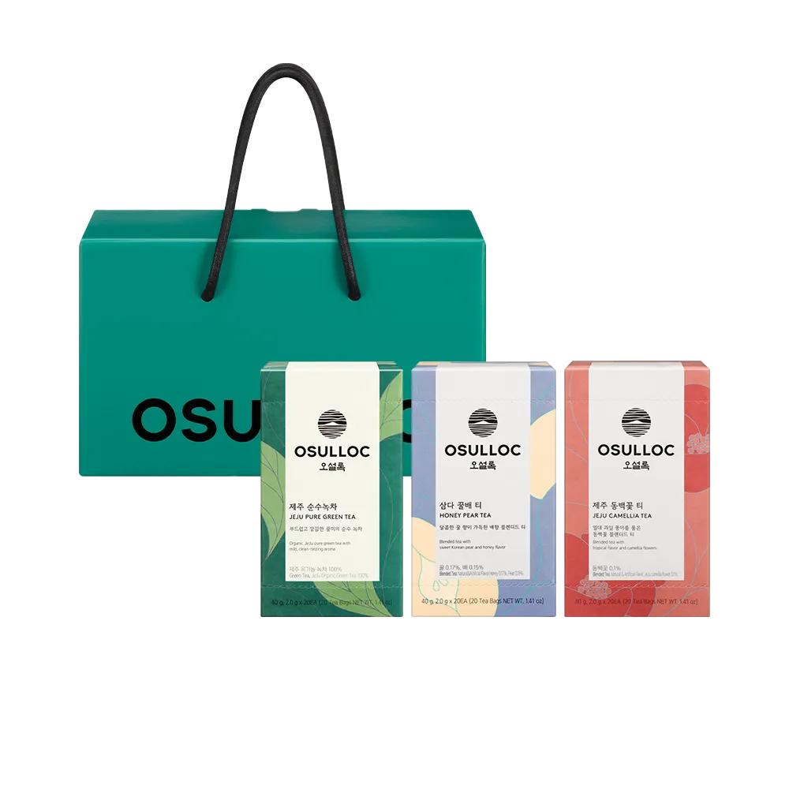

마스터 블렌드 8종 32입
MASTER BLEND
티 마스터의 큐레이션을 통해 섬세한 취향을 담은 기프트
유형별 베스트 티를 엄선하고, 원물이 담긴 일러스트북 케이스로
더욱 특별한 가치를 더한 티 세트

티 에디션 스페셜 9종 54입
TEA EDITION SPECIAL
다채로운 차를 통한 힐링과 휴식, 프리미엄 가치를 더한 스페셜 에디션
오설록에서 가장 사랑받아온 순수차, 허브, 블렌디드 티를 담은 대표 티 에디션

베스트 티백 세트 3종 60입
BEST TEA BAGS SET
부드럽고 깔끔한 오리지널 순수 녹차
달콤한 꿀을 품은 배의 향미가 가득한 블렌디드 티
열대과일의 향긋함을 품은 동백꽃 블렌디드 티